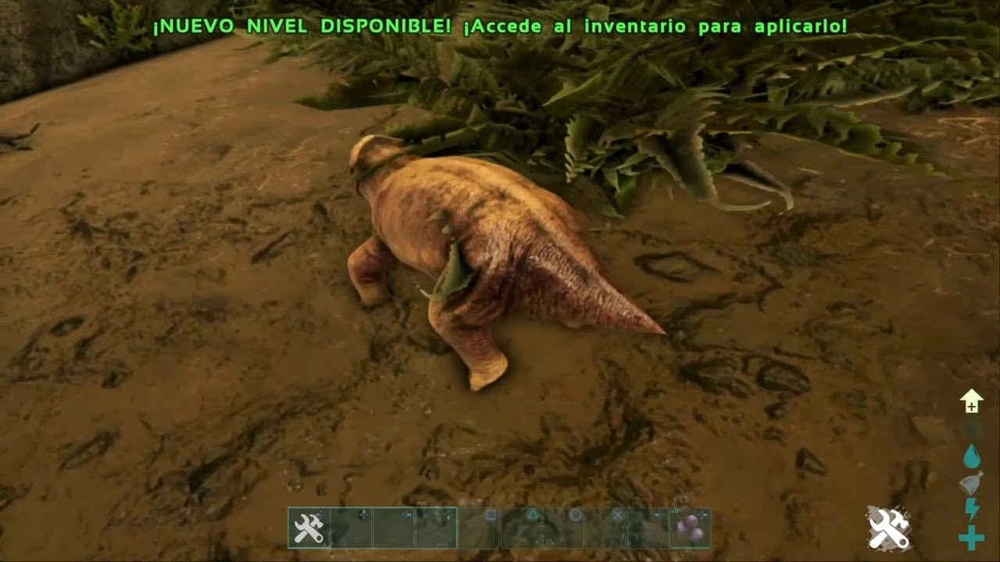
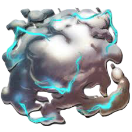

Aqui te explicaremos lo principal a la hora de tamear a tus criaturas, cuando decimos tamear, nos referimos a domesticar una criatura, existen dos tipos de tameo principales, aunque hay algunas criaturas que requieren metodos mas excentricos para obtenerse. Tamear criaturas es algo fundamental para tu supervivencia, te ayudaran a recolectar materiales, conseguir comida, defender tu hogar y te acompañaran en las batallas mas dificiles contra los peligrosos jefes del mapa.
Cuando decimos tameo pasivo nos referimos a una forma no agresiva de domesticar a tus criaturas, la forma mas usual es colocar comida que sea del agrado del animal en el ultimo slot de tu cinturon de inventario, luego te acercaras lentamente por detras para no espantarlo y lo alimentaras con su respectiva comida lo que subira el porcentaje de domesticacion de la criatura, esto tendras que repetirlo varias veces para lograr tamear a tu criatura.
Tamear a una criatura por knockout es la forma mas normal de domesticar criaturas, para ello necesitas 3 cosas, un arma con municion narcotica para dejarlo inconsciente, comida para alimentarlo y tranquilizantes para que no se despierte en el medio del tameo.
Lo primero sera la municion tranquilizante la cual puede ser de dos tipos principalmente, dardos tranquilizantes y flechas tranquilizantes, los dardos infligiran mucho mas aturdimiento que las flechas debido a su grado de refinacion y potencia, pero las flechas son mucho mas sencillas de obtener en grandes cantidades.
La comida varia segun la criatura, algunas comen carne, otras comen bayas y otras algunos alimentos mas especificos, tambien, hay una comida universal que todos los animales disfrutan, la cual es el pienso, el mejor alimento posible.
Por ultimo necesitamos algun tipo de tranquilizante, estos nos aseguraran la inconsiencia de la criatura y nos permitiran tamearla sin que se despierte en el proceso, en caso de despertarse la criatura huira o nos atacara por intentar capturarla, estos tranquilizantes pueden ser narcoticos, bayas narcoticas o en el mejor de los casos podriamos utilizar biotoxina, obtenida al matar a unas peligrosas medusas llamadas "cnidarias".
Una vez tengamos todo preparado necesitaremos acercarnos a la criatura y dispararle tranquilizantes hasta que caiga inconciente, luego accederemos a su inventario y la alimentaremos con la comida necesaria, y tambien agregaremos tranquilizantes para controlar su inconsiencia. Con un poco de paciencia y cuidado lograremos capturar a nuestra criatura.